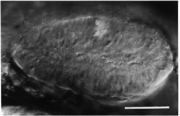

Modified from: Kimmel et al., 1955. Developmental Dynamics 203:253-310. Copyright © 1995 Wiley-Liss, Inc. Reprinted only by permission of Wiley-Liss, a subsidiary of John Wiley & Sons, Inc.
Fig. 24. The optic primordium is well formed at the 9-somite stage (13.5 h). Left side Nomarski view, dorsal to the top, anterior to the left. In the fashion of the neural rod itself, the optic primordium is a solid tissue at this time, not a hollow vesicle. A hint of a seam run across it that precedes development into the optic cup. Scale bar: 50 µm.

Figure 24